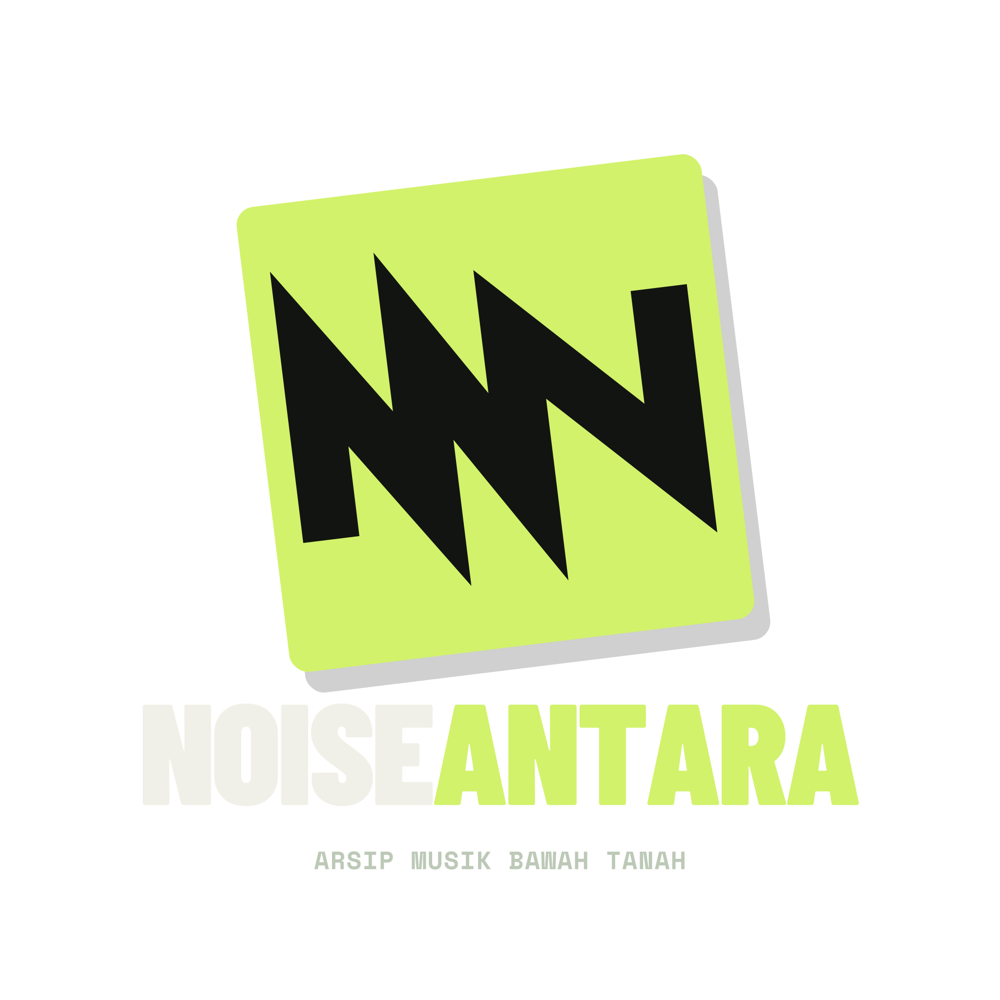

← KEMBALI KE ENTRIBAGIKAN
JEJAKNYA.
Satu entri, satu frame cerita. Pilih artefaknya, lihat komposisi, lalu simpan sebagai gambar siap unggah. Opsi entri diambil dari database arsip.
LIHAT PRATINJAUMemuat font dan ilustrasi lokal…
Catatan penting. Watermark Noiseantara selalu ada di gambar. Mengunduhnya tidak memberi izin memakai materi lain pada arsip sungguhan.
CARANYA UNGGAH KE STORY / TIKTOK
Tekan Unduh PNG, lalu pilih gambar dari galeri saat membuat IG Story, TikTok Photo, atau story platform lain. Tombol Bagikan berkas memakai menu berbagi bawaan hanya jika browser dan perangkat mendukung berbagi gambar. Tidak ada unggahan langsung dari situs ini.
Poster memiliki rasio 9:16 pada 1080 × 1920 piksel. Garis “area aman” hanya tampilan panduan, bukan bagian dari PNG.
PRATINJAU / 9:16
HASIL SAMA DENGAN PNGRilisan/artis memakai sampul dari pipeline media (atau ilustrasi cadangan). Gig/zine memakai visual flyer dan sampul koleksi arsip. Tidak ada foto peristiwa asli.